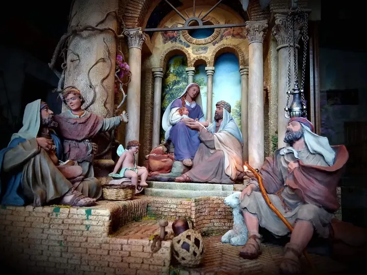

da gio 19 nov a dom 17 gen
Presepi dal Mondo
Ricca esposizione di presepi ed opere d’arte ispirati al tema della Natività, provenienti da musei, collezioni, maestri presepisti e appassionati di tutto il mondo; una panoramica completa della tradizione presepista intercontinentale.
 Indicazioni
Indicazioni
- Costi e prenotazioni
- Costo non indicato · Prenotazione non indicata
- Programma
- Programma da verificare. Apri la fonte ufficiale per orari e possibili aggiornamenti.
- In caso di maltempo
- Nessuna indicazione specifica pubblicata.
- Note
- Acquisito automaticamente dalla fonte.
L’EVENTO
Descrizione completa
Ricca esposizione di presepi ed opere d’arte ispirati al tema della Natività, provenienti da musei, collezioni, maestri presepisti e appassionati di tutto il mondo; una panoramica completa della tradizione presepista intercontinentale.
L’esposizione continua ad ottenere grandi consensi e riconoscimenti ogni anno, quasi a sottolinearne il carattere di multietnicità e tolleranza tra popoli di culture diverse .
La Rassegna, organizzata dalla Fondazione Verona per l’Arena, quest'anno si terrà all'interno dello splendido scenario degli arcovoli dell'Arena di Verona di piazza Brà, in pieno centro storico.
Quest'anno l'edizione sarà innovativa con inserimenti multimediali e sonori, ma anche speciale in quanto dedicata a San Francesco, in occasione degli 800 anni dalla sua morte.
La rassegna che emoziona grandi e piccini festeggia quest’anno la 42° edizione .
Vivi la magia con presepi provenienti da tutto il mondo, ogni anno è diversa!
IL PROGRAMMA
Programma e orari
Appuntamenti raccolti dalle fonti elencate. Dove manca un orario, non è ancora disponibile in questa scheda.
Programma pubblicato
- 2026-11-19 — 2027-01-17 · 09:00:00
INFORMAZIONI UTILI
Prima di partire
- Controllare la fonte prima di partire.
ORGANIZZAZIONE